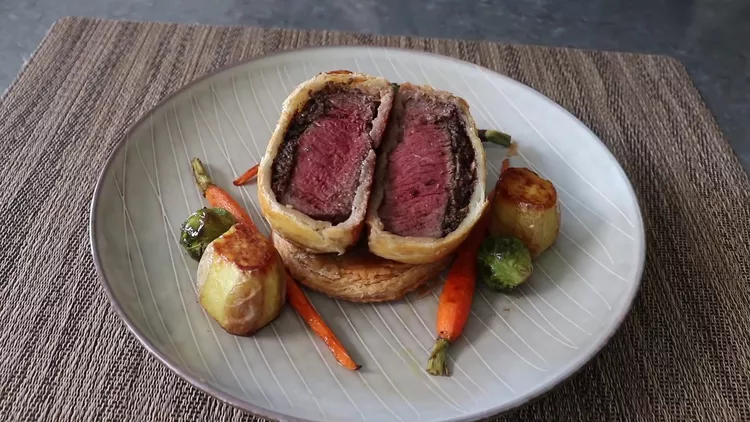

Chef John's Individual Beef Wellingtons

Description
I've been quoted as saying beef Wellington is one of the dumbest recipes of all time and that I would never do a video for it. I still stand by those statements. However, "dumb" doesn't mean not delicious or not beautiful to look at. Since I'm doing an individual version here, I've still not technically done a real beef Wellington. My legal department has assured me I'm on solid ground, and I expect Attorneys General from all over the country to agree with me for no apparent reason.
The reason I think a classic (whole tenderloin version) beef Wellington is a dumb recipe is the fact that you can much more easily and effectively prepare those exact same components separately, and then simply serve them together. You want crispy puff pasty? Don't wrap it around meat and mushroom pate. You like perfectly cooked beef tenderloin? Then don't make cooking it so much trickier by wrapping in pastry.
So then, why didn't I just do a "deconstructed" beef Wellington? Because for all its glaring faults conceptually, cutting into precisely cooked, pastry-wrapped meat for the big reveal is very dramatic, and a proven crowd-pleaser. So, to summarize, the best thing about this ancient recipe is the presentation, which is why I'm presenting this fun-size version. We still get the visual payoff at the end, but the components are much easier to control and execute. Also, using this method we're able to cheat with a small round base of crispy pastry underneath our Wellington, just in case.
The procedure in the video is very straightforward. As long as you use pieces of beef cut to the same size and weight, chill them in the freezer for 15 minutes before they go in the oven, and pull them out at exactly 122 degrees F for a juicy medium rare, not much can go wrong. I really do hope you give this "beef Wellington" a try soon. Enjoy!
Ingredients
For the Mushroom Duxelles:
- 3 tablespoons unsalted butter
- 10 large brown mushrooms, finely chopped
- ¼ teaspoon salt
- 2 tablespoons minced shallots
- freshly ground black pepper to taste
- 1 pinch cayenne pepper, or to taste
- 3 tablespoons white wine
- 2 ounces pate
For the Wellingtons:
- 4 (8 ounce) filet mignon steaks
- salt and freshly ground black pepper to taste
- 2 tablespoons salted butter
- 1 (17.25 ounce) package frozen puff pastry
- 2 tablespoons Dijon mustard
- 1 large egg, beaten
- 1 teaspoon water
Steps
- Melt butter over medium-high heat. Add mushrooms and salt; cook and stir until well browned and caramelized, about 5 minutes. They will be wet and soggy at first but will dry out.
- Add shallots and cook until they soften up and turn translucent, about 3 minutes. Add black pepper, cayenne, and white wine. Stir until wine evaporates, about 1 minute. Turn off the heat and transfer to a bowl to cool to room temperature.
- Add pate to cooled mushroom mixture; toss and mash with a spoon until thoroughly combined. Set aside.
- Generously season filets with salt and pepper. Melt butter for Wellingtons in the same pan over high heat. Sear, one at a time, in the hot pan until the sides and edges are nicely browned, about 5 minutes per filet. Transfer to a plate and place in the refrigerator until needed.
- Cut each sheet of pastry into 4 squares. Place one square frozen puff pastry onto a lightly floured surface. Spoon about 3 tablespoons pate mixture into the center and press out to roughly the same size as a filet. Spread 1/2 tablespoon mustard on top of one filet and place mustard-side down on the pate.
- Gently stretch and fold the shorter sides of the pastry around the filet, then bring the longer sides up and over to seal. You can stretch the dough that will be on the bottom of the filet, but try not to stretch it on the sides and top. It's okay to have a couple of small holes at the bottom. Flip Wellington over and place seam-side down on a plate. Repeat to form remaining 3 Wellingtons, then transfer all to the refrigerator.
- Preheat the oven to 425 degrees F (220 degrees C). Line a sheet pan with parchment paper.
- Cut remaining 4 squares of puff pastry into circles that are roughly the size of the Wellingtons. Place on the prepared sheet pan and poke all over each circle with a fork.
- Bake in the center of the preheated oven for 15 minutes. Remove from the oven, flip, and press circles down with a spatula to flatten. Return to the oven and bake until cooked through and crispy, 5 to 10 minutes longer. Remove from the oven and lift off the sheet pan to cool. Increase the oven temperature to 450 degrees F (230 degrees C).
- Transfer Wellingtons to the freezer for exactly 15 minutes. Line the same sheet pan with aluminum foil, then top with parchment paper. Beat egg with water in a small bowl.
- When Wellingtons have been in the freezer for 15 minutes, transfer to the prepared pan and generously brush with egg wash.
- Bake pastry in the center of the preheated oven until pastry is golden brown and puffed and filets are cooked through, 23 to 25 minutes. An instant-read thermometer inserted into the center should read 122 degrees F (50 degrees C).
- Immediately remove from the hot pan and transfer onto a plate or cutting board for at least 5 minutes. Cut Wellingtons in half, then trim each end to create a flat surface.
- Place each rounded pastry base on a plate and stand 2 filet halves on top with center cut facing up.